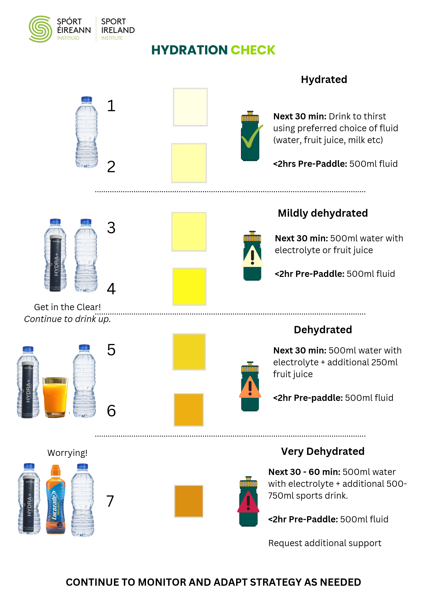

Enter your session time to get a fuelling timeline for the day.
General sports-nutrition guidance only, not personalised advice. Adjust portions and timing to what works for your body, and consult a professional for specific dietary needs.
Check your urine colour against the chart below to gauge hydration and how much fluid to take on.
